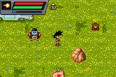
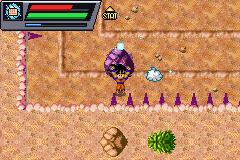
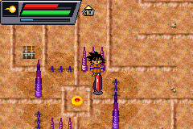
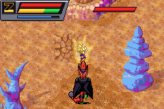
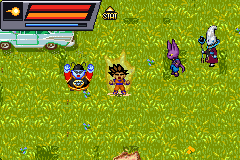

Jouer
Environ 2,6 Mo à charger, puis l'émulateur.
Clique dans l'écran du jeu pour lui donner le clavier. Menu de l'émulateur : en bas de l'écran (plein écran, son, touches, sauvegardes).
Touches
| Game Boy Advance | Clavier | Dans le jeu |
|---|---|---|
| Croix | ←↑→↓ | Se déplacer |
| A | X | Frapper, parler, fouiller (maintenu : coup chargé) |
| B | Z | Technique du carré (maintenu : Kamehameha, Poing Genkidama) |
| L | A | Changer de technique |
| R | S | Garde ; avec la croix : courir |
| START | Entrée | Menu (statut, objets, aptitudes) |
| SELECT | Retour arrière | Carte |
Manette USB ou Bluetooth reconnue. Sur téléphone et tablette, une croix et des boutons tactiles s'affichent sur l'écran.
Sauvegardes
On sauvegarde dans le jeu sur les cercles C. La mémoire de la cartouche est recopiée dans ton navigateur toutes les 30 secondes : attends un instant après avoir sauvegardé avant de fermer la page.
Elle reste sur cet appareil et ce navigateur. Le menu de l'émulateur permet d'exporter le fichier de sauvegarde (.sav) pour le garder ou le reprendre ailleurs.
Dans cette démo
- Prologue : la ferme, la Ville de l'Est, les dinosaures, Piccolo, Goten et le retour du Super Saiyan.
- Chapitre 1 : la planète de Kaio et le Poing Genkidama, le chemin du Serpent, les enfers, le labyrinthe des aiguilles et son énigme, Cell Max, le Super Saiyan 3… et Beerus.
- Avec le son : la musique de l'écran titre, une musique par lieu (la maison, la ville, l'aventure, l'Autre Monde, les enfers), les combats de boss et les bruitages des coups, du Kamehameha et des transformations.
Images




